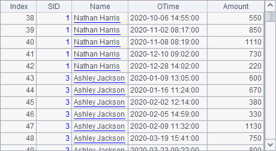
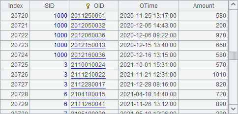
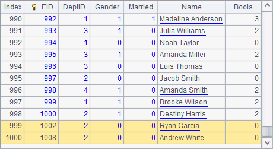

The dot is one of the most basic chart elements. A dot needs merely one pair of logical coordinates to be positioned. By specifying a sequence of multiple pairs of logical coordinates, you can plot multiple dots.
Below is the plotting algorithm for a scatter chart showing population in some cities:
|
|
A |
|
1 |
=canvas() |
|
2 |
=demo.query("select NAME,POPULATION from STATES where STATEID<6") |
|
3 |
=A1.plot("BackGround") |
|
4 |
=A1.plot("EnumAxis","name":"x","allowRegions":false) |
|
5 |
=A1.plot("NumericAxis","name":"y","location":2,"autoCalcValueRange":false,"maxValue":5.0E7,"format":"#,###.##","transform":1,"scale":1000.0) |
|
6 |
=A1.plot("Dot","axis1":"x","data1":A2.(NAME),"axis2":"y","data2": A2.(POPULATION)) |
|
7 |
=A1.draw@p(450,250) |
A1 creates a canvas. A2 retrieves data for plotting the chart:

A3 plots a white background. A4 plots an enumeraed axis, x, as the horizontal axis, and A5 designs a numeric axis, y, as the vertical axis.
A6 designs the dot element, which is our focus.
A7 draws the chart as follows:

As can be seen, the colors of dots are by default automatically generated. Next, using this plotting algorithm, let¡¯s learn about the chart properties of the dot element and get preliminary understanding about the common properties of the frequently used chart elements.
A chart element¡¯s data properties are for plotting its physical coordinates. A dot element can be positioned by only one pair of coordinates. Generally two logical axes are needed to define the logical coordinates for a chart element. Values or expressions for logical coordinates of the two axes will be set individually. Though no particular order is required for the two logical axes, they should be a fixed pair, an x-axis and a y-axis, or a polar axis and a radial axis, for instance.

Here the data of logical coordinates on both axes – A2.(NAME) and A2.(POPULATION) – are sequences, which means there are multiple pairs of coordinates for plotting multiple points.